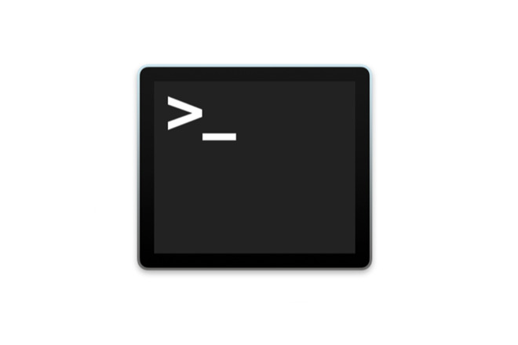

For file manipulation (C project)
After some initial research, I was looking for ways in which C can detect what is happening in the command-line. One way was using the in-built arg parameters in C which tracked the user inputs and the number of inputs and another method was using a switch case block to read where the user wants to navigate to.
I decided to use the arg parameters in my approach as I wanted to learn more about them and thought they made more logical sense to use.